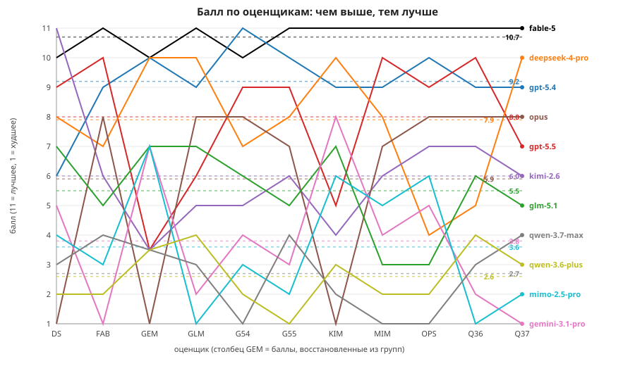
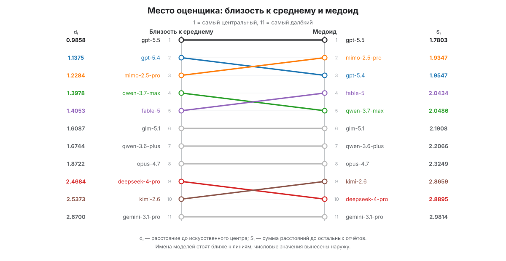
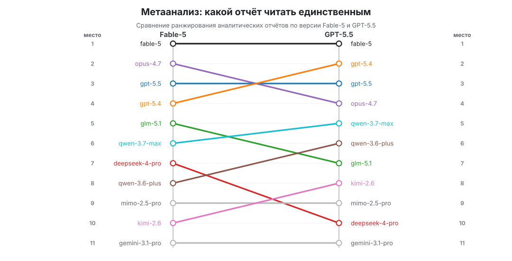
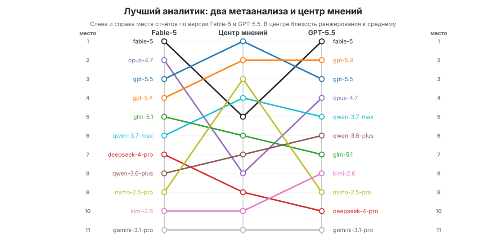

Гибель богов. Сравнение подходов 11 LLM к задаче реорганизации кода.¶
Other languages
This article is also available in English: Twilight of the Gods.
Это подробный разбор одного эксперимента. Я взял god node из реального LangGraph агента и попросил 5 американских и 6 китайских моделей сначала предложить, как её распутать, а потом оценить предложения друг друга. Дальше тремя разными способами пытался понять, кому из них в этом деле верить.
Оглавление
- Исходная задача Что за god node и чем она опасна
- Что именно делала нода
plan - Лимонад из лимонов Зачем это всё и как устроен эксперимент
- Первый этап. Модели генерируют предложения
- Таблица предложений
- Чуть более подробно о каждом предложении
- Второй этап. Модели оценивают предложения
- Таблица разборов
- Подробнее о каждом разборе
- Третий этап. Конкурс мокрых купальников Выбираем кто в чём хорош
- Подход первый. Сходятся ли оценки Выбираем лучшее предложение
- Подход второй. Сравнение анализов по тезисам Выбираем лучшего аналитика
- Подход третий. Центр мнений и медоид Опять выбираем лучшего аналитика
- Deus ex machina. Ещё разок выбираем лучшего аналитика
- Выводы Какую модель брать в генераторы, какую в оценщики и на чём сердце успокоится
Исходная задача¶
Знаете, бывает порой, что пишешь с ребятами учебного ИИ-агента для курса от Data Sanity и в пёстром вихре быстро нарастающего функционала вдруг обнаруживаешь, что у тебя в одном из внутренних агентов проекта граф состояний (LangGraph) выглядит вот так:
flowchart TD
planner_start([START]) --> plan[plan]
plan -->|search| search[search]
plan -->|ask_user| ask_user[ask_user / interrupt]
plan -->|reflect| reflect[reflect]
plan -->|calculate| calculate[calculate]
plan -->|finish| finish[finish]
search -->|last_observation| observe[observe]
search -->|no hits / backend failure| plan
observe --> plan
calculate --> plan
ask_user --> observe_user[observe_user]
observe_user --> plan
reflect --> plan
finish --> planner_end([END])Казалось бы, перед нами просто симпатичный осьминожек, чего волноваться. Но если знать, как много логики должен удерживать этот осьминожек в своей скромной восьминогой голове, сразу станет понятно, что перед нами антипаттерн. В данном случае назовём его god node.
В узле plan упрятано около 350 строк логики, внутри которых и итерационные проверки, и bootstrap-вопросы про регион и валюту, и подготовка схемы, и маршрутизация acquisition-задач, и вызов LLM, и последующая коррекция решения, и всё такое прочее.
Проблема не только в размере функции. Когда важная оркестрация скрыта внутри одной ноды, граф перестаёт быть представлением системы. Его сложнее объяснять, сложнее отлаживать, сложнее тестировать и опаснее менять. Поэтому есть очевидная задача не просто «разделить большую функцию на куски», а вынести скрытую управляющую логику на уровень графа так, чтобы итоговая архитектура стала нагляднее и пригоднее для дальнейшей разработки.
Что именно делала нода plan¶
Вообще, агент, который должен был описываться этим графом, занимался сбором различных параметров для дальнейших расчётов. Часть этих параметров он хитро искал в интернете, часть узнавал у пользователя. И всё это по не до конца детерминированному алгоритму, поскольку от контекста конкретного разговора с пользователем правильный способ получения одного и того же параметра мог сильно варьироваться. Вот такой набор реальных функций был упакован в ноду plan:
| Зона ответственности | Какая логика была спрятана внутри plan |
|---|---|
| Итерационный цикл | Увеличение iterations, вход в новый шаг планирования, проверки status == "aborted" и max_iters |
| Bootstrap-вопрос про регион | Проверка _needs_region_question() и принудительный переход в ask_user для core.region |
| Bootstrap-вопрос про валюту | Проверка _needs_currency_question() и принудительный переход в ask_user для core.currency |
| Проактивная декомпозиция | Генерация dynamic_decompositions для полей, которые нужно разложить на компоненты |
| Сборка acquisition-рецептов | Вызов build_dynamic_recipes() и подготовка структуры задач для дальнейшего сбора полей |
| Подготовка схемы | Вызов compose_ready_fields(), слияние готовых компонентных полей в агрегаты и обновление schema |
| Ограничения калькулятора | Проверки лимита попыток калькулятора, успешного и уже актуального расчёта, а также других условий остановки |
| Восстановление после заблокированного расчёта | Разбор сценария с заблокированным калькулятором, поиск следующей задачи сбора данных и, при необходимости, резервная декомпозиция для проблемного поля |
| Общая маршрутизация сбора данных | Выбор следующей задачи сбора данных без LLM, включая быстрый проход по уже открытым и компонентным задачам |
| Логика автозавершения | Проверка, собраны ли все исходные данные, остались ли ещё поля, по которым можно действовать, и можно ли завершать цикл без дополнительных шагов |
| LLM-планирование | Сбор контекста для промта, вызов _llm().structured(...) и получение PlannerDecision |
| Декомпозиция после LLM | Догенерация декомпозиции для выбранного моделью поля, если его нужно разложить на компоненты |
| Перенаправление и нормализация решений | Перенаправление решений по производным полям, принудительный ask_user -> search для полей, которые лучше искать через поиск, и другие детерминированные переписывания после LLM |
| Повторы и лимиты по полям | Выявление повторных поисков, лимиты на search и ask_user, а также перевод в ask_user, reflect или finish, когда лимиты уже исчерпаны |
| Корректировка решения по расчёту | Исправление слишком раннего finish: если расчёт ещё не доведён до конца, решение переписывается в calculate или переводится в дополнительный шаг переоценки |
| Служебное ведение состояния | Сброс или обновление decision, decision_origin, llm_failed, status и других временных флагов, сопровождавших ветвления |
| Логирование и отправка событий | Лог финального решения, отправка событий прогресса и сборка итогового обновления состояния перед возвратом из ноды |
Лимонад из лимонов¶
Итак, мы в очень узнаваемой ныне для многих ситуации. Мсье Клод слепил нам поделку из лапши. Причёсывать эту лапшу — занятие совсем не такое весёлое, как навешивать функционал за функционалом без всякого ревью. Но это только до тех пор, пока не догадаешься, что снижать энтропию можно тем же инструментом, которым её повышали. А это уже гораздо приятнее.
Но можно ли доверить распутывание кода той же модели, которая, дай только волю, с такой радостью его запутывает?
Для ответа на этот вопрос я решил собрать несколько независимых архитектурных предложений от разных моделей. И сравнить, что они насоветуют.
Для оценки на подиум были приглашены 11 моделей:
- GPT-5.4
- GPT-5.5
- DeepSeek-4-pro
- Gemini-3.1-pro
- GLM-5.1
- Kimi-2.6
- MiMo-2.5-pro
- Opus-4.7
- Qwen-3.6-plus
- Qwen-3.7-max
- Fable-5
Сначала каждая из них делала собственное предложение по разбиению plan. А потом модели переходили в режим оценщиков, читали весь набор готовых предложений и ранжировали их.
Чтобы обеспечить сбор независимых мнений, а не эстафету пересказов одного удачного текста, были обеспечены следующие условия:
- Когда генерировались предложения, модели не видели результаты работы друг друга.
- Когда генерировались анализы, они видели все предложения, но не видели ни одного чужого анализа.
- Каждый запуск шёл в новой сессии.
Все работы проводились в OpenCode с плагином Oh My Openagent, с максимальным reasoning effort для всех моделей.
Первый этап. Модели генерируют предложения¶
На первом этапе каждая модель предлагала свой способ вынести логику ноды plan на уровень графа. Запрос, которым генерировалось каждое предложение (менялось только имя выходного файла):
look at docs/planner-graph-ref/current-graph.md. Looks like "plan" node contains too many logic in it. give a proposal of how to move this logic to graph level in <model>-proposal.md
Таблица предложений¶
| Модель | Характер графа | Основная идея |
|---|---|---|
| Fable-5 | Сбалансированный, 5-стадийный | Разделить plan на tick -> prepare -> select -> decide -> guard: первичные вопросы и лимиты вынести в tick, подготовку состояния — в prepare, детерминированные развилки — в select, вызов модели — в decide, а исправление решений после модели — в guard |
| GPT-5.4 | Умеренный, фазовый | Почти тот же расклад, что у Fable-5, но первичные вопросы про регион и валюту вынесены из входной ноды в отдельную bootstrap_gate |
| GPT-5.5 | Более подробный, дисциплинарный | Максимально формализовать служебную логику цикла: отдельно вынести подготовку схемы, нормализацию решения, retry и calculator policy |
| DeepSeek-4-pro | Компактный, 4-фазный | Собрать весь цикл в четыре крупные фазы и держать post-LLM корректировки в одном узле adjust |
| Gemini-3.1-pro | Укрупнённый, минималистичный | Сильно укрупнить graph: почти всю детерминированную проверку собрать в evaluate_rules, а LLM оставить отдельной финальной фазой |
| GLM-5.1 | Консервативный, двухшаговый | Сделать минимальное безопасное разбиение: один pre-check перед циклом и один общий узел, где выбирается дальнейшее действие |
| Kimi-2.6 | Детализированный pipeline | Явно развести bootstrap, calculator gate, сбор задачи и отдельный слой принудительной policy после решения |
| MiMo-2.5-pro | Умеренно укрупнённый | Разбить graph на крупные блоки guards -> acquire -> decide, не вытаскивая наружу каждую отдельную policy-проверку |
| Opus-4.7 | Максимально декомпозированный | Почти каждую скрытую политику превратить в отдельный gate или corrector, а затем сводить всё в dispatch |
| Qwen-3.6-plus | Средняя детализация | Выделить preflight и decomposition как отдельные фазы, а завершение проводить через дополнительную finish-проверку |
| Qwen-3.7-max | Очень подробный pipeline | Почти полностью развернуть скрытый state machine наружу: отдельные проверки, post-process, cap enforcement и финальный routing |
Чуть более подробно о каждом предложении¶
Fable-5¶
flowchart TD
planner_start([START]) --> tick[tick]
tick -->|aborted / max_iters| finish[finish]
tick -->|region or currency missing| ask_user[ask_user / interrupt]
tick -->|otherwise| prepare[prepare]
prepare --> select[select]
select -->|deterministic decision found| guard[guard]
select -->|no decision| decide[decide / LLM]
decide --> guard
guard -->|search| search[search]
guard -->|ask_user| ask_user
guard -->|reflect| reflect[reflect]
guard -->|calculate| calculate[calculate]
guard -->|finish| finish
search -->|last_observation present| observe[observe]
search -->|no hits or backend failure| tick
observe --> tick
calculate --> tick
ask_user --> observe_user[observe_user]
observe_user --> tick
reflect --> tick
finish --> planner_end([END])Fable-5 предложил разложить скрытую логику по пяти стадиям. На tick ложится начало итерации. Сюда входят счётчик шагов, остановка по status == "aborted", лимит max_iters и первичные вопросы про region и currency.
В prepare уходит подготовительный слой. Это проактивная декомпозиция, сбор рецептов для дальнейшего получения данных и вызов compose_ready_fields.
Дальше в select отрабатывает цепочка детерминированного выбора без основного вызова модели. Сюда попадают проверки калькулятора, быстрый проход по уже собранным данным, автозавершение и ветки сбора данных после заблокированного расчёта.
Если в select не нашлось детерминированного ответа, управление переходит в decide. Там происходит только вызов модели и построение структурированного решения.
Затем guard собирает в одном месте перенаправление решений по производным полям, принудительный перевод в поиск для полей, которые лучше искать в интернете, лимиты на повторные действия и корректировку перед финальной маршрутизацией в search, ask_user, reflect, calculate или finish. Раньше все эти переписывания и ограничения были размазаны по хвосту plan. Ноды действий при этом не меняются, они просто возвращаются уже не в старую ноду plan, а обратно в tick.
Такое разбиение делает архитектуру более наблюдаемой. По графу уже понятно, где принимается детерминированное решение, где нужен LLM, а где решение проходит через слой ограничений и исправлений. Самая важная находка — decision_origin. Благодаря ей общий guard понимает, какое решение пришло от LLM, а какое было найдено детерминированно, и не применяет одну и ту же policy ко всем веткам подряд. Слабые места у схемы тоже есть: не все LLM-вызовы вынесены в decide, а guard остаётся довольно насыщенной нодой.
GPT-5.4¶
flowchart TD
START --> tick
tick -->|continue| bootstrap_gate
tick -->|terminal| finish
bootstrap_gate -->|needs region/currency| ask_user
bootstrap_gate -->|ready| prepare_context
prepare_context --> acquisition_gate
acquisition_gate -->|deterministic decision| decision_policy
acquisition_gate -->|needs LLM| llm_plan
llm_plan --> decision_policy
decision_policy -->|search| search
decision_policy -->|ask_user| ask_user
decision_policy -->|reflect| reflect
decision_policy -->|calculate| calculate
decision_policy -->|finish| finish
search -->|last_observation| observe
search -->|no observation| tick
observe --> tick
calculate --> tick
reflect --> tick
ask_user --> observe_user
observe_user --> tick
finish --> ENDGPT-5.4 устроен почти так же, как Fable-5. Здесь тоже есть входная нода цикла, подготовка контекста, детерминированная развилка перед моделью, отдельный вызов модели и единый слой исправления решений после неё.
Главное отличие в том, что первичные вопросы про регион и валюту не остаются внутри tick, а выносятся в отдельную bootstrap_gate. Поэтому tick отвечает только за начало шага, счётчик итераций и проверки остановки, а bootstrap_gate уже решает, можно ли идти дальше или нужно сначала отправить пользователя в ask_user.
Остальные стадии в основном совпадают с Fable-5 по смыслу, только названы более явно.
GPT-5.4 даёт ясные рабочие установки. Его раздел про антипаттерны даёт возможность качественно, с пониманием целей, провести рефакторинг.
GPT-5.5¶
flowchart TD
planner_start([START]) --> enter_iteration
enter_iteration -->|aborted or max_iters| finish
enter_iteration --> prepare_schema
prepare_schema -->|region missing| require_region
prepare_schema -->|currency missing| require_currency
prepare_schema -->|calculator cap hit| finish
prepare_schema -->|calculator current| finish
prepare_schema --> acquisition_gate
require_region --> ask_user
require_currency --> ask_user
acquisition_gate -->|component task| normalize_decision
acquisition_gate -->|all raw inputs ready| maybe_calculate
acquisition_gate -->|LLM needed| plan
plan --> normalize_decision
normalize_decision --> retry_gate
retry_gate --> maybe_calculate
maybe_calculate -->|calculator required| calculate
maybe_calculate -->|search| search
maybe_calculate -->|ask_user| ask_user
maybe_calculate -->|reflect| reflect
maybe_calculate -->|finish| finish
search -->|last_observation| observe
search -->|no hits| enter_iteration
observe --> enter_iteration
calculate --> enter_iteration
ask_user --> observe_user
observe_user --> enter_iteration
reflect --> enter_iteration
finish --> planner_end([END])GPT-5.5 идёт дальше первых двух вариантов и сильнее дробит служебную часть цикла. enter_iteration остаётся входной нодой. Она увеличивает счётчик и проверяет остановку. Затем prepare_schema собирает подготовку состояния, отдельно проверяет наличие region и currency, а также держит ранние выходы по лимиту калькулятора и уже готовому расчёту. Если нужны регион или валюта, управление уходит в require_region или require_currency, а затем в обычную ask_user.
Дальше acquisition_gate пытается найти детерминированный ответ до вызова модели: определить, какой недостающий компонент составного поля нужно собрать следующим, понять, что все исходные данные уже собраны, или признать, что нужен вызов LLM (plan).
После модели решение проходит через normalize_decision, где собираются исправления вроде перенаправления производных полей и догенерации декомпозиции.
Потом retry_gate отдельно занимается лимитами повторных поисков и вопросов, а maybe_calculate решает, нужно ли перед финальным переходом отправить управление в calculate.
То есть это всё ещё тот же общий подход, но GPT-5.5 выносит наружу не только крупные стадии, а ещё и правила обработки PlannerDecision: как исправлять выбранное действие, когда останавливать повторные поиски и вопросы, и когда вместо финала отправлять управление в calculate.
DeepSeek-4-pro¶
flowchart TD
planner_start([START]) --> guard[guard]
guard -->|ask region/currency| ask_user
guard -->|aborted or max_iters| finish
guard -->|continue| prepare
prepare -->|calculator cap or success| finish
prepare -->|blocked calculator / auto-complete| adjust
prepare -->|continue| plan
plan -->|decomposition needed| plan
plan -->|continue| adjust
adjust -->|search| search
adjust -->|ask_user| ask_user
adjust -->|calculate| calculate
adjust -->|reflect| reflect
adjust -->|finish| finish
search -->|last_observation| observe
search -->|no hits| guard
observe --> guard
calculate --> guard
ask_user --> observe_user
observe_user --> guard
reflect --> guard
finish --> planner_end([END])DeepSeek-4-pro выбирает более компактное разбиение. guard здесь совмещает вход в цикл, проверки остановки и первичные вопросы про регион и валюту. Если всё в порядке, управление переходит в prepare. Там собирается состояние перед решением, проверяются лимиты и успешность калькулятора, разбирается заблокированный расчёт и выполняется автозавершение, если все данные уже собраны.
Если prepare не нашла детерминированного ответа, граф идёт в plan, где происходит вызов модели для поиска.
При этом поиск с новой декомпозицией не вынесен из plan. Если модель выбрала составное поле без готового рецепта, та же нода добавляет недостающую декомпозицию и заново вызывает модель уже с обновлённым контекстом. В Mermaid это зачем-то обозначено петлёй plan -> plan. Хотя было бы логичнее никак не обозначать.
После этого всё попадает в adjust. Эта нода собирает переписывания решений, лимиты повторов, корректировку расчёта и финальную маршрутизацию в search, ask_user, calculate, reflect или finish. Схема получается более короткая, но больше логики остаётся внутри prepare, plan и adjust.
Граф получился компактным, но всё ещё логичным, хотя prepare и adjust остаются достаточно жирненькими. Имеется ряд неприятных ошибок. recipes совершенно незачем хранить в чекпоинтах, а петля plan -> plan не нужна.
Gemini-3.1-pro¶
flowchart TD
planner_start([START]) --> prepare_state
prepare_state --> evaluate_rules
evaluate_rules --> route_after_rules{route_after_rules}
route_after_rules -->|ask_user| ask_user
route_after_rules -->|calculate| calculate
route_after_rules -->|search| search
route_after_rules -->|finish| finish
route_after_rules -->|needs_llm| llm_plan
llm_plan --> route_after_llm{route_after_llm}
route_after_llm -->|search| search
route_after_llm -->|ask_user| ask_user
route_after_llm -->|reflect| reflect
route_after_llm -->|finish| finish
search --> route_after_search{route_after_search}
route_after_search -->|found| observe
route_after_search -->|failed| prepare_state
observe --> prepare_state
calculate --> prepare_state
ask_user --> observe_user
observe_user --> prepare_state
reflect --> prepare_state
finish --> planner_end([END])У Gemini-3.1-pro есть некоторый стиль. Он как будто больше заботится об экологии, чем об архитектуре ПО. Выдаёт решение очень примерное, в меру продуманное, зато тратит минимальное количество токенов.
prepare_state берёт на себя подготовку состояния. Узел увеличивает счётчик итераций, запускает проактивную декомпозицию, собирает готовые компонентные поля и обновляет схему.
После этого evaluate_rules проверяет все детерминированные условия. Это остановка по лимитам, регион и валюта, состояние калькулятора, заблокированный расчёт, следующая задача сбора данных и автозавершение.
Если правило сработало, граф сразу уходит в нужное действие: ask_user, calculate, search или finish. Если нет, управление попадает в llm_plan, где уже вызывается модель и строится PlannerDecision.
Gemini-3.1-pro даёт грубый первый эскиз. Выделены подготовка состояния, детерминированные правила и LLM-вызов, но evaluate_rules всё ещё собирает в себе слишком много разнородной логики. Post-LLM policy почти не описана. Редиректы, лимиты повторов и расчётная корректировка то ли прячутся внутри нод, то ли вообще не учтены.
GLM-5.1¶
flowchart TD
START --> pre_check
pre_check -->|abort or finish| finish
pre_check -->|ask region| ask_region
pre_check -->|ask currency| ask_currency
pre_check -->|continue| acquire_or_plan
ask_region --> observe_user_region[observe_user]
ask_currency --> observe_user_currency[observe_user]
observe_user_region --> pre_check
observe_user_currency --> pre_check
acquire_or_plan -->|search| search
acquire_or_plan -->|ask_user| ask_user
acquire_or_plan -->|calculate| calculate
acquire_or_plan -->|reflect| reflect
acquire_or_plan -->|finish| finish
search -->|observe| observe
search -->|retry| pre_check
observe --> pre_check
calculate --> pre_check
ask_user --> observe_user
observe_user --> pre_check
reflect --> pre_check
finish --> ENDGLM-5.1 как будто вместо рефакторинга ноды делает только первый шаг к этому. Вся ранняя логика складывается в pre_check. Это вход в итерацию, остановка по статусу и лимитам, вопросы про регион и валюту, проактивная декомпозиция, сборка схемы, а также ранние выходы по калькулятору.
После pre_check остаётся одна большая рабочая нода acquire_or_plan. Она либо находит следующую задачу сбора данных без вызова модели, либо проверяет автозавершение, либо вызывает модель и сразу же применяет исправления решения после неё.
По сути, разбиения почти не происходит — большая часть логики всё ещё остаётся внутри acquire_or_plan, просто уже под новым именем.
Кроме того, GLM-5.1 даже не сделала схему в Mermaid, а описала текстом. Здесь она перерисована ради единообразия статьи, не меняя саму структуру предложения.
Kimi-2.6¶
flowchart TD
START([START]) --> tick
tick -->|aborted or max_iters| finish
tick -->|needs region| ask_region
tick -->|needs currency| ask_currency
tick -->|ready| prepare
prepare --> calc_gate
calc_gate -->|calc success| finish
calc_gate -->|calc cap reached| finish
calc_gate -->|continue| acquire
acquire -->|auto_finish| calc_adjust
acquire -->|blocked_task| route_direct
acquire -->|needs LLM| decide
decide --> enforce
route_direct --> enforce
enforce -->|search| search
enforce -->|ask_user| ask_user
enforce -->|reflect| reflect
enforce -->|calculate| calculate
enforce -->|finish| finish
search -->|has observation| observe
search -->|no hits| tick
observe --> tick
calculate --> tick
ask_user --> observe_user
observe_user --> tick
reflect --> tick
ask_region --> observe_user
ask_currency --> observe_user
finish --> END([END])Kimi-2.6 почти смогла. tick отвечает за вход в итерацию и проверки остановки, а первичные вопросы вынесены в отдельные ветки ask_region и ask_currency. Затем prepare занимается подготовкой состояния. Это проактивная декомпозиция, рецепты и сборка готовых полей. После него calc_gate отдельно проверяет жизненный цикл калькулятора, выбирая между успешным расчётом, исчерпанными попытками и продолжением работы.
Следующая нода, acquire, ищет детерминированный путь. Это автозавершение, заблокированная расчётная задача или необходимость вызвать модель. Если уже есть задача сбора данных, она проходит через route_direct; если нет — управление уходит в decide, где вызывается модель.
Ветки route_direct и decide затем сходятся в enforce, где применяются ограничения, перенаправления, лимиты и расчётные корректировки перед финальным переходом в действие.
Отдельно отмечу, что в предложении от Kimi-2.6 есть ветка auto_finish -> calc_adjust, но при этом calc_adjust не описана и дальше никуда не ведёт. А ведь в остальном граф выглядит вполне разумным. Досадно.
Kimi-2.6 выдала достаточно взвешенное решение, близкое по форме к GPT-5.4, например. Но картину портит сгаллюцинированная ветка calc_adjust, жирноватый enforce_policy и ничего толком не делающая route_direct.
MiMo-2.5-pro¶
flowchart TD
START --> guards
guards -->|bootstrap gate| ask_user
guards -->|early_finish| finish
guards -->|proceed| acquire
acquire -->|has_task| decide
acquire -->|no_task| finish
decide --> plan_router[post_process / route_after_plan]
plan_router -->|search| search
plan_router -->|ask_user| ask_user
plan_router -->|reflect| reflect
plan_router -->|calculate| calculate
plan_router -->|finish| finish
search -->|observe| observe
search -->|retry| guards
observe --> guards
calculate --> guards
ask_user --> observe_user
observe_user --> guards
reflect --> guards
finish --> ENDПервая нода, guards, берёт на себя вход в итерацию, проверки остановки, вопросы про регион и валюту, а также ранние выходы по калькулятору. Если ничего не остановило цикл, управление идёт в acquire.
В acquire происходит подготовка состояния. Это проактивная декомпозиция, сборка схемы и поиск следующей задачи сбора данных. Если задача есть, граф идёт в decide; если задач больше нет, может завершиться.
decide не только вызывает модель при необходимости, но и превращает найденную задачу сбора данных в решение, а также применяет перенаправления, лимиты и расчётные корректировки.
В общем, разбиение чуть более существенное, чем у GLM-5.1, но всё ещё слишком осторожное.
Исходно и здесь схема была не в Mermaid, а в текстовом виде. Перерисовал.
Opus-4.7¶
flowchart TD
START([START]) --> g_iter
g_iter -->|aborted/cap| dispatch
g_iter -->|ok| g_region
g_region -->|missing| emit_region --> dispatch
g_region -->|present| g_currency
g_currency -->|missing| emit_currency --> dispatch
g_currency -->|present| enrich
enrich --> g_calc_caps
g_calc_caps -->|cap reached| emit_calc_abort --> dispatch
g_calc_caps -->|success| emit_calc_done --> dispatch
g_calc_caps -->|continue| acquire
acquire -->|task found| emit_acq --> c_calc_adjust
acquire -->|auto-finish| emit_auto_finish --> c_calc_adjust
acquire -->|work remains| plan_llm
plan_llm --> c_target_decompose
c_target_decompose --> c_redirect_derived
c_redirect_derived --> c_redirect_web
c_redirect_web --> c_search_cap
c_search_cap --> c_ask_cap
c_ask_cap --> c_calc_adjust
c_calc_adjust --> dispatch
dispatch -->|search| search
dispatch -->|ask_user| ask_user
dispatch -->|calculate| calculate
dispatch -->|reflect| reflect
dispatch -->|finish| finish
search -->|hits| observe --> START
search -->|no hits| START
ask_user --> observe_user --> START
calculate --> START
reflect --> START
finish --> END([END])Opus-4.7 разворачивает почти всю скрытую логику наружу. Входной участок состоит из цепочки проверок. g_iter отвечает за итерацию и остановку, g_region и g_currency отдельно проверяют первичные поля, enrich готовит схему и декомпозиции, а g_calc_caps разбирает ранние выходы по калькулятору.
Если дальше есть детерминированная задача сбора данных или автозавершение, acquire превращает это в решение через emit_acq или emit_auto_finish; если нет, управление идёт в plan_llm.
После вызова модели Opus-4.7 не оставляет единый guard, а раскладывает исправление решения в цепочку корректоров. c_target_decompose догенерирует декомпозицию для составного поля, c_redirect_derived перенаправляет производные поля, c_redirect_web переводит слишком ранний вопрос пользователю в поиск, c_search_cap и c_ask_cap следят за лимитами, а c_calc_adjust исправляет слишком ранний finish перед расчётом.
Все ветки потом сходятся в dispatch, который уже отправляет граф в конкретное действие.
Как карта скрытых политик это очень наглядно, но как рабочая схема она выглядит тяжёлой. Почти каждое правило становится отдельной нодой.
На мой взгляд, на таком решении лучше всего остановиться, пока идёт исследовательская фаза создания агента и пока ещё не совсем понятно, как он будет устроен. Такая детализация помогает трассировать работу агента при общении с тестировщиками или пользователями по чекпоинтам графа. А когда станет понятно, что схема устоялась и граф меняется редко, его можно будет укрупнить. С llm-assisted разработкой это недорого.
Qwen-3.6-plus¶
flowchart TD
planner_start([START]) --> preflight
preflight -->|needs region| ask_region
preflight -->|needs currency| ask_currency
preflight -->|calc cap exceeded| finish
preflight -->|calc success| finish
preflight -->|ok| decompose
ask_region --> observe_region
ask_currency --> observe_currency
observe_region --> preflight
observe_currency --> preflight
decompose --> plan
plan -->|search| search
plan -->|ask_user| ask_user
plan -->|reflect| reflect
plan -->|calculate| calculate
plan -->|finish| route_finish_check
search -->|last_observation| observe
search -->|no hits| plan
observe --> plan
calculate --> plan
ask_user --> observe_user
observe_user --> plan
reflect --> plan
route_finish_check -->|caps ok, all done| planner_end([END])
route_finish_check -->|cap exceeded| finish
finish --> planner_endQwen-3.6-plus начинает с крупной preflight. Туда попадают проверки остановки, вопросы про регион и валюту, лимит калькулятора и успешный расчёт.
Регион и валюта вынесены в отдельные ветки ask_region и ask_currency, после которых ответы возвращают управление обратно в preflight. Если все первичные проверки пройдены, граф идёт в decompose, где подготавливаются динамические декомпозиции и схема.
Дальше управление попадает в plan. Эта нода остаётся довольно жирной, она строит решение модели. А куда это наш затейник Qwen спрятал логику перенаправлений, лимитов и расчётных исправлений? В условную функцию-ребро route_after_plan!
Это главный изъян схемы. Ребро в LangGraph должно лишь читать state и возвращать имя следующей ноды, а не переписывать decision/status. Это не просто какой-то там антипаттерн. Такое не будет работать. Ребро возвращает строку маршрута и не может сохранить переписанное решение, поэтому при срабатывании лимита ask_user прервётся со старым поисковым решением без текста вопроса, а статус aborted потеряется.
Заодно по диаграмме видна вторая проблема. Рабочие циклы (search, observe, calculate, observe_user, reflect) возвращаются в plan, а не в preflight, поэтому проверки остановки и max_iters на главной петле не перепроверяются.
Отдельно вынесена только проверка завершения. Если модель решила finish, граф сначала идёт в route_finish_check, где проверяется, действительно ли можно заканчивать, или нужно вернуться в работу.
С finish в этой схеме есть неопределённость. По тексту предложения это существующая терминальная нода, которая просто завершает planner graph. Но Mermaid рисует часть завершений сразу в planner_end, а часть через finish, поэтому роль самой finish неясна.
В итоге разбиение получилось неряшливым. Часть важных стадий вынесена вполне резонно, но область в районе plan, routing и finish — какая-то зона свободной фантазии. Это нечто, издалека имеющее очертания предложения по рефакторингу, но ближе к нему лучше не подходить.
Qwen-3.7-max¶
flowchart TD
planner_start([START]) --> check_termination
check_termination -->|aborted or max_iters| finish
check_termination -->|continue| check_region_currency
check_region_currency -->|needs region| ask_region
check_region_currency -->|needs currency| ask_currency
check_region_currency -->|ready| compose_schema
ask_region --> observe_user
ask_currency --> observe_user
observe_user --> check_region_currency
compose_schema --> check_calculator
check_calculator -->|calc cap reached| finish
check_calculator -->|calc succeeded| finish
check_calculator -->|calc blocked| acquisition_routing
check_calculator -->|pending| acquisition_routing
acquisition_routing -->|has task| decide_action
acquisition_routing -->|no task| check_completion
check_completion -->|all collected| finish
check_completion -->|missing fields| decide_action
decide_action --> llm_decide
llm_decide -->|LLM failure| finish
llm_decide -->|valid decision| post_process
post_process --> enforce_caps
enforce_caps -->|search cap| ask_user
enforce_caps -->|ask cap| finish
enforce_caps -->|ok| route_decision
route_decision -->|search| search
route_decision -->|ask_user| ask_user
route_decision -->|reflect| reflect
route_decision -->|calculate| calculate
route_decision -->|finish| finish
search -->|has observation| observe
search -->|no hits| check_termination
observe --> check_termination
calculate --> check_termination
ask_user --> observe_user
reflect --> check_termination
finish --> planner_end([END])Qwen-3.7-max предлагает сделать нод даже больше, чем Opus-4.7.
Сначала check_termination проверяет остановку и лимит итераций, потом check_region_currency отдельно решает вопросы про регион и валюту.
После этого compose_schema собирает схему и декомпозиции, а check_calculator отдельно проверяет лимит калькулятора, успешный расчёт, заблокированное состояние и обычное продолжение работы.
Затем acquisition_routing разбирает случай, когда расчёт заблокировался на недостающем поле. По рецептам static_field_acquisition она ищет следующий acquisition_task, а если готового рецепта нет, пытается сгенерировать dynamic_decompositions для заблокированного поля.
Если acquisition_routing не нашла acquisition_task, check_completion отдельно проверяет, можно ли завершать работу или в схеме ещё остались недостающие поля. Только после этих нод граф доходит до llm_decide, где происходит вызов модели.
После модели решение ещё проходит через post_process, где догенерируются декомпозиции и выполняются перенаправления, затем через enforce_caps, где применяются лимиты поиска и вопросов, и только потом через route_decision уходит в конкретное действие.
Предложение по степени разбиения похоже на Opus-4.7. Но есть сильные отличия в реализации этой идеи.
У Opus-4.7 лучше объяснительная часть. Это 17-строчная карта обязанностей старой plan, ясная таксономия g_* / c_*, общий инвариант «любая ветка сначала приводит результат к PlannerDecision, а потом dispatch отправляет его в нужное действие», таблица владения state-полями и внятная трёхшаговая миграция. Opus-4.7 предоставляет лучшую карту управляющей логики, хотя и держит немного маршрутизации в state.
Qwen-3.7-max при этом сделан гораздо более неряшливо и противоречиво. Вся маршрутизация завязана на служебное поле _route. Каждая нода записью в это поле сообщает ребру, куда идти дальше, а ребро исполняет. Это самодельный goto поверх условных рёбер LangGraph. В результате решение о маршруте снова прячется внутри нод, и граф перестаёт отражать реальный поток управления, то есть частично обнуляется сам смысл рефакторинга. Вдобавок поле приходится проставлять в каждой ноде, и стоит где-то забыть или оставить устаревшее значение — получаешь тихий мисроутинг.
route_decision в тексте названа нодой, но в сборке графа не зарегистрирована как нода и используется как routing-функция с побочным эффектом. acquisition_task ищется повторно в разных местах.
И окончательно огорчает петля observe_user -> check_region_currency, которая обходит check_termination, а это единственная нода, инкрементящая iterations. Значит, на самой ходовой петле «спросил → ответил» счётчик не срабатывает: max_iters и ряд механизмов поиска перестают работать.
Второй этап. Модели оценивают предложения¶
На втором этапе каждая модель читала все одиннадцать предложений и ранжировала их. Запрос, которым генерировался каждый анализ (менялось только имя выходного файла):
You are skilled software architect specializing in llm agentic development. In docs/planner-graph-ref/proposals there are some proposals to refactor current planner component graph. Evaluate those proposals and create ranged list of them in docs/planner-graph-ref/analyse/<model>-range.md with explanation of what good and bad sides you can see in each. Make a conclusion of what proposal or combination of them you can advice as best solution.
Таблица разборов¶
| Модель | Характер разбора | Главное |
|---|---|---|
| Fable-5 | Дотошный, с проверкой кода | Единственный отчёт с проверяемыми фактами, нашёл оба бага, полное покрытие и план сборки |
| GPT-5.4 | Практичный, архитектурный | Единственный проверил содержимое tests/planner/ (и поймал на этом Opus-4.7), трезвая установка «лучший вариант зависит от цели». Своё предложение поставил первым |
| GPT-5.5 | Аккуратный, дисциплинированный | Ни одного ложного факта, лучший разбор ограничений (чекпоинты, рёбра, namespace) |
| DeepSeek-4-pro | Максимально насыщенный | Самый плотный по информации артефакт и явно полезен для прочтения, но ставит на первое место забагованного фаворита |
| Gemini-3.1-pro | Минималистичный, крупными мазками | Нет оценки предложений по отдельности, даже явные указания из промта не выполнены. Аутсайдер по всем метрикам |
| GLM-5.1 | Систематичный, но оценивал «в попугаях» | Поймал двойной расчёт у Kimi-2.6 и дал карту имён нод, но спутал предложения GPT-5.5 и Qwen-3.6-plus |
| Kimi-2.6 | Широкий, самокритичный | Сам нашёл баг с итерациями у Qwen-3.7-max, но тащит Gemini-3.1-pro на 4-е место и советует сомнительное решение с recipes в state |
| MiMo-2.5-pro | Систематичный, со шкалами | Придумал интересную идею сходимости предложений и попытался вывести лучшее предложение по ней, но оценки с ложной точностью и слишком благодушен к рискам |
| Opus-4.7 | Глубокий, таксономический | Самый богатый «пакет для решения», предложил правила удерживающие от дальнейшего разрастания ноды (единственный из набора). Портят две фактические ошибки — несуществующий тест-файл, баг Kimi-2.6 назван «приятным» |
| Qwen-3.6-plus | Вдумчивый к самой проблеме | Лучшая построчная карта plan_node во всём наборе и беспощадная самооценка, но середина рейтинга не заслуживает доверия. |
| Qwen-3.7-max | Дидактичный, объясняющий | Систематичный подход к решению вопроса о том, сколько же нод лучше всего оставить в графе. Хвалит сомнительную петлю DeepSeek-4-pro |
Подробнее о каждом разборе¶
Fable-5¶
Разбор Fable-5 — самый основательный в наборе. Это единственный отчёт с проверяемым набором фактов. В нём шесть утверждений о текущем коде с точными ссылками файл:строка, и все шесть проходят независимую перепроверку.
Он единственный нашёл оба бага, которые реально влияют на выбор: двойной _adjust_calculation_decision у Kimi-2.6 и пропуск инкремента итераций у Qwen-3.7-max — большинство не нашло ни одного, а оба этих бага позже сами, по отдельности, подтвердили другие модели.
Полное покрытие всех 11 предложений по единым критериям, сравнительная матрица, открытый список отвергнутых идей с указанием авторов. В конце дана конкретная рекомендация со схемой сборки итогового решения из нескольких предложений в три шага.
Слабые места, тем не менее, есть. Текст плотный, держится на номерах строк (которые протухнут с первым же изменением agent.py), нет числовых оценок. Отранжировал предложение собственной модельной семьи первым. Правда, прямо проговорил этот конфликт интереса в самом отчёте.
GPT-5.4¶
GPT-5.4 — крепкий практик. Он единственный проверил, что реально лежит в tests/planner/. Это позволяет ему привязать план миграции тестов к реальности и заодно поймать Opus-4.7 на ссылке на несуществующий тест-файл. Плюс острые наблюдения, которых нет у других. Например, какие схемы позволяют observe_user самому разбирать bootstrap-ответы и какие держат state безопасным для сериализации.
Он исходит из резонной установки, что лучший вариант зависит от того, что тебе нужно, минимум правок или максимум структурированности.
Минусы зеркальны к Fable-5. Каждое предложение разобрано достаточно поверхностно, без построчных доказательств, оба бага не заметил. Ранжирует своё предложение первым, но, в отличие от Fable-5, никак этот момент не оговаривает.
GPT-5.5¶
Разбор от GPT-5.5 — самый аккуратный текст во всём наборе. Перепроверка не нашла в нём ни одного ложного утверждения. И он лучше всех объясняет ограничения, вокруг которых вообще крутится вся задача. Граница ноды — это граница чекпоинта (планнер сидит на внешнем Postgres-сейвере, так что каждая лишняя нода — это запись на каждый ход), функции-рёбра — не «бесплатный» транзитный код, а смена namespace чекпоинтов — решение, затрагивающее пользовательский опыт, так как при обновлении в проде слетят некоторые уже начатые диалоги.
Это единственный разбор, прочитав который, можно самому взвешенно рассудить, сколько же делать нод. Также модель критикует собственное же предложение за криво поставленную ноду. Концовка чёткая и по делу: гибридная рекомендация, готовая mermaid-схема и миграция в семь шагов.
Из минусов, по предложениям коротковато, без сравнительной матрицы, и ни одного из двух багов он не выловил.
DeepSeek-4-pro¶
С DeepSeek-4-pro всё не так однозначно. Разбор есть за что похвалить, но доверять его выводам нельзя, и второе перевешивает.
За что хвалим. Это самый плотный по информации артефакт из всех одиннадцати. Таблицы «согласен / не согласен» по каждому предложению, уникальная таблица разрешения противоречий между отчётами, полная синтезированная схема с mermaid, подсчётом строк и планом миграции.
А подводит именно вывод. Он награждает предложение Kimi-2.6 первым местом (хотя по консенсусу оно в середине) и хвалит связывание route_direct → enforce_policy как «чистый паттерн», а это ровно тот баг, где _adjust_calculation_decision срабатывает дважды. Opus-4.7 при этом закопан на последнее место, а в собственную рекомендацию зашит recipes в state — то, чего сериализатор просто не пропустит.
Gemini-3.1-pro¶
С Gemini-3.1-pro всё стабильно. Минималистичное предложение, минималистичный разбор. Безоговорочный аутсайдер.
Полезное всё же есть. Таксономия из четырёх парадигм (фазовый конвейер / минимализм / микро-ноды / маршрутизация в рёбрах) даёт неплохую краткую диспозицию. И собственная схема из четырёх нод вполне связная.
А хоронит его как разбор то, что в нём вообще нет оценки предложений по отдельности. Одиннадцать вариантов схлопнуты в четыре группы, так что взвесить по нему ни один конкретный вариант нельзя. А единственное сильное частное утверждение оказывается проверяемо ложным. Ни один из багов не был замечен.
Хорошая шпаргалка на одну страницу, но после того, как прочитал нормальный отчёт, а не вместо него.
GLM-5.1¶
Разбор GLM-5.1 — добротный и систематичный по форме. Таблицы по аспектам с единой структурой на каждое предложение, реально полезная таблица соответствия имён (кто какую ноду как называет), миграция по фазам 0–5.
И, что важнее формы, он один из всего двух отчётов, кто заметил двойной _adjust_calculation_decision у Kimi-2.6, хотя и подал это слишком вскользь.
Портит картину пара вещей. Он путает предложение GPT-5.5 с микро-нодами observe_region/observe_currency, которые на самом деле из схемы Qwen-3.6-plus. Розданные баллы не соответствуют текстовой мотивации под этими баллами. Часть рисков (тот же recipes, петля plan → plan) аккуратно сглажена. Своего слоя проверки фактов у него нет.
Kimi-2.6¶
У Kimi-2.6 есть сильные находки, но доверять его выводам нельзя. Он выловил баг с пропуском инкремента итераций у Qwen-3.7-max, один из всего двух отчётов, кто его нашёл. Своё предложение поставил на восьмое место, а его же список «чего избегать» местами прямо противоречит его собственной схеме.
Но промахи перевешивают. Предложение Gemini-3.1-pro он тащит на четвёртое место из-за путаного прочтения его возвратных рёбер. Возврат мимо сторожевой ноды, который у Qwen-3.7-max Kimi-2.6 зовёт багом, у Gemini-3.1-pro сочтён мелочью.
Вторым номером в рекомендации стоит кеширование recipes от DeepSeek-4-pro, которое не пройдёт сериализатор.
MiMo-2.5-pro¶
Самая ценная часть разбора MiMo-2.5-pro — приложение со сходимостью. Подсчёт того, в чём все одиннадцать предложений независимо сошлись (за вынос поиска 10 из 11, за единственный interrupt все 11, и так далее).
Покрытие полное, вывод сдержанный, рекомендация вменяемая (база Fable-5 + антипаттерны GPT-5.4 + опционально дробление от GPT-5.5).
А вот середина таблицы подводит. Оценки с десятыми долями обещают точность, которой в текстовых обоснованиях не видать. Рисковые идеи (recipes, отдельные bootstrap-ноды) он принимает слишком благодушно, багов не нашёл, слой проверки фактов отсутствует.
Opus-4.7¶
Предложение Opus-4.7 было спорным, а разбор вышел одним из лучших в наборе.
Он предоставил самый глубокий «пакет для принятия решения» из всех. Семь явных критериев, буквенные оценки, обстоятельные вердикты по каждому предложению, лучшая таксономия (тот самый инвариант «сначала приводим к PlannerDecision, потом dispatch») и две конкретные поправки. А ещё только он задумался о том, как удержать граф чистым после рефакторинга, и предложил нулевым шагом записать guardrails в planner/AGENTS.md, а уже потом трогать код.
Но в текст вкрались две обескураживающие неточности. Дважды процитирован тест-файл tests/planner/test_planner_agent.py, которого не существует. А связывание route_direct → enforce_policy у Kimi-2.6 он называет «приятным решением», хотя это баг с двойным расчётом. Плюс многословие и непортируемые ссылки.
Qwen-3.6-plus¶
Ещё один приятный разворот. Предложение Qwen-3.6-plus я с присущей мне вежливостью назвал зоной свободной фантазии. Разбор же вышел куда вменяемее.
Более того, здесь обнаружен один из самых полезных артефактов. Таблица с построчной разметкой plan_node (строки 848–1192, с колонкой «нужен ли тут LLM»). Если вообще хочется понять, зачем и по каким швам резать god node, начинать стоит отсюда.
Подкупает адекватная самооценка. Своё предложение Qwen-3.6-plus ставит на восьмое место и сам же объясняет его регрессию с возвратом в plan.
Теперь о плохом. Верх и низ чарта как будто сделаны аккуратно, а середина набросана как попало. DeepSeek-4-pro почему-то под заголовком «переусложнено», хотя там всего четыре ноды. Kimi-2.6 на пятом месте без единого слова про двойной расчёт. Путаная придирка к ветке _route у Qwen-3.7-max. Своей проверки фактов нет.
Qwen-3.7-max¶
Разбор Qwen-3.7-max дидактически силён. По каждому предложению есть разделы «почему не больше нод» и «почему не меньше», так что читатель получает не голый вердикт, а понимание самого пространства решений. Восемь взвешенных осей, полное покрытие, трезвая самооценка (своё предложение на восьмом месте).
Есть и слабые места. Он хвалит петлю plan → plan у DeepSeek-4-pro как «элегантную», хотя остальные разборы справедливо видят в ней скорее лишние записи чекпоинта в БД. И на этой похвале частично держится завышенное второе место DeepSeek-4-pro. К проблемам собственной схемы он тоже снисходителен, своего слоя проверки кода нет.
Третий этап. Конкурс мокрых купальников¶
Здесь я попытаюсь найти какие-то ответы на самые насущные вопросы современности:
- Какую модель лучше выбрать для генерации архитектурных решений?
- Какую модель лучше выбрать для оценки набора архитектурных решений?
- Как вообще всю ответственность за архитектурные решения свалить на модель?
Подход первый. Сходятся ли оценки¶
Первое, что хочется сделать, просто сверить средние оценки моделей. Оказалось, что мнения по самим архитектурным предложениям можно свести в достаточно чёткий консенсус.
На картинке ниже каждая линия показывает, как одно предложение оценивалось разными моделями, а цветной пунктир — его среднее значение по всем оценкам.

«Сгущения» линий для Gemini-3.1-pro обусловлены тем, что он разделил решения на 4 группы вместо того, чтобы делать полный чарт.
Также можно отметить подозрительное перемешивание линий у Kimi-2.6. Как будто он раздал оценки несколько с потолка.
Сводный результат по лучшим предложениям¶
| Место | Предложение | Средний балл |
|---|---|---|
| 1 | Fable-5 | 10.7 |
| 2 | GPT-5.4 | 9.2 |
| 3 | GPT-5.5 | 8.0 |
| 4 | DeepSeek-4-pro | 7.9 |
| 5 | Kimi-2.6 | 6.0 |
| 6 | Opus-4.7 | 5.9 |
| 7 | GLM-5.1 | 5.5 |
| 8 | Gemini-3.1-pro | 3.8 |
| 9 | MiMo-2.5-pro | 3.6 |
| 10 | Qwen-3.7-max | 2.7 |
| 11 | Qwen-3.6-plus | 2.6 |
Для выбора лучшего предложения по архитектуре этот способ достаточно хорош. Он прост, прозрачен и воспроизводим.
Подход второй. Сравнение анализов по тезисам¶
Средние рейтинги показывают, какое предложение нравится большинству. Но проводить серию анализов от разных моделей по каждому принимаемому решению — слишком дорогой путь. По крайней мере пока. Поэтому хотелось бы понять, какую модель предпочтительнее использовать как оценщика решений. Нужно определить лучшего аналитика.
Как же это сделать? В качестве первого метода я попробовал сделать тезисный анализ:
- собрать список тезисов, которые встречаются в отчётах оценщиков;
- отметить, какие модели поддерживают какой тезис;
- построить матрицу согласия и рейтинг оценщиков по тому, насколько их анализ совпадает с общим ядром;
- отдельно учесть ширину покрытия, структуру текста и глубину рассуждения.
Поясню последний пункт. Ширина покрытия — сколько тезисов из общего списка разбор вообще затронул (у самого охватистого их набралось 36, у самого скупого — 19). Структура текста — сколько в разборе собрано содержательных составляющих анализа. Это критерии оценки, сильные и слабые стороны, синтез с рекомендацией, план миграции, разбор рисков, сравнительная таблица. Глубина рассуждения — по сути просто длина разбора.
Из всех разборов нормализовалось около сорока тезисов.
Примеры консенсусных тезисов (в скобках — количество высказавших):
plan_node— god-нода, её надо дробить (10);- граф обманчив: слишком много маршрутной логики спрятано внутри
plan_node(10); - детерминированную логику до вызова LLM надо вынести в видимые на графе фазы (10);
- сам вызов LLM должен ужаться до тонкой фазы планирования (10);
- возвраты из нод-действий должны входить в верхнюю фазу цикла, а не в середину планирования (10);
ask_userостаётся единственной нодой-прерыванием (10);- цель — конвейер из устойчивых фаз средней гранулярности. Не нода на каждый
if, но и без чрезмерного дробления с лишними записями в чекпоинт (10); - post-LLM политика и перенаправления должны стать явной архитектурой, а не оставаться зарытыми в одной функции-планировщике или в рёбрах (10).
Примеры спорных тезисов, которые высказывал мало кто:
- нужны ли отдельные bootstrap-ноды под
regionиcurrency(2); - хороша ли петля
plan → planу DeepSeek-4-pro для поздней декомпозиции (3); - нужен ли адаптер
route_direct, сводящий детерминированные и LLM-решения в одну пост-фазу (3); - заводить ли отдельное поле
decision_originвместо простогоllm_failed(2); - держать ли
recipesв state (1); - разбивать ли post-LLM политику на цепочку
normalize_decision → retry_gate → maybe_calculate(3).
Я трижды сделал оценку по этому алгоритму.
В первый раз я ранжировал оценщиков по степени популярности тезисов, которые высказывает каждый разбор. С некоторой поправкой на охват, структуру и глубину. Лучшим вышел DeepSeek-4-pro.
Что такое степень популярности высказанных тезисов? У каждого тезиса есть популярность — сколько разборов его высказали. Балл разбора — это сумма популярностей всех тезисов в нём. Поэтому разделяемый многими тезис приносил больше очков, чем нишевый, и выше всех оказывался тот, кто собрал максимум общих, разделяемых другими мыслей. DeepSeek-4-pro вышел вперёд именно так — подписался под наибольшим числом тезисов, пусть в среднем и не самых популярных.
Во второй раз я формализовал сравнение. Разложил каждый разбор на оценки по аспектам, усреднил их и посмотрел, чей разбор ближе всего к этому среднему. DeepSeek-4-pro снова вышел первым. А вся остальная таблица изрядно изменилась.
Аспект — это повторяющееся архитектурное утверждение, в которое сведено несколько близких тезисов из разных разборов. Например, «целимся в граф на 4–6 фаз», «после LLM хватает одной policy-ноды», «нужны отдельные bootstrap-ноды под region и currency». Таких набралось девятнадцать. По каждому аспекту разбор получал число от −1 до +1 в зависимости от того, поддерживает разбор аспект, молчит или отвергает. Так текст превращался в вектор из 19 чисел, из которого выводится средний вектор и по близости к нему сортируются отчёты.
В третий раз метод я не трогал — только переименовал файл DeepSeek-4-pro, чтобы тот встал в конце списка. Потому что мне показалось, что его нахождение в начале списка отчётов может влиять на то, как определяется список тезисов для анализа. В результате DeepSeek-4-pro съехал на четвёртое место, а сам набор тезисов вышел короче.
Если выписать все три ранжирования рядом, видно, как мотает оценщиков от прогона к прогону (Fable-5 в этих экспериментах ещё не участвовала):
| Оценщик | Прогон 1 | Прогон 2 | Прогон 3 |
|---|---|---|---|
| DeepSeek-4-pro | 1 | 1 | 4 |
| Qwen-3.7-max | 2 | 7 | 2 |
| Opus-4.7 | 3 | 5 | 9 |
| Kimi-2.6 | 4 | 9 | 10 |
| GLM-5.1 | 5 | 8 | 3 |
| GPT-5.5 | 6 | 3 | 6 |
| Qwen-3.6-plus | 7 | 6 | 7 |
| MiMo-2.5-pro | 8 | 2 | 1 |
| GPT-5.4 | 9 | 4 | 5 |
| Gemini-3.1-pro | 10 | 10 | 8 |
В этот момент я понял, что выделить лучшего аналитика семантически у меня не получается. Сделал ещё пару попыток, используя эмбеддинги для сравнения вместо нормализации тезисов. Но не буду утомлять тебя, усталый читатель, той ерундой, что из этого получилась.
Подход третий. Центр мнений и медоид¶
Не получилось вычислить самого умелого аналитика по текстам анализов. Значит, вычислим по метрикам. А из метрик у нас, в общем-то, только места, розданные предложениям.
Сначала строится искусственный центр. Это среднее арифметическое мест каждого предложения по всем анализам. Потом каждый отчёт сравнивается с этим средним ранжированием. Отдельно, в качестве контрольного метода, считается медоид: для каждого реального отчёта измеряется суммарное расстояние до всех остальных реальных отчётов.
Этот способ показывает, насколько точно аналитик предсказал распределение мест предложений по рефакторингу в сводном рейтинге.

Оба метода показали, что лучшим предсказателем общего рейтинга оказался GPT-5.5. Дальше по списку есть небольшие расхождения в двух методах вычисления. Но они именно что небольшие. Одна позиция в ту или иную сторону. И по расстоянию до медоида видно, что у поменявшихся местами моделей разница в сотые и тысячные.
Достаточно ожидаемо, что GPT-5.4 и GPT-5.5 хорошо предсказали итоговый рейтинг. И достаточно внезапно, что MiMo-2.5-pro и Qwen-3.7-max подбираются к верху таблицы. Хотя, если взглянуть на диаграмму с графиком оценок, то так и есть, эти китайские аналитики попадают достаточно близко к среднему.
Deus ex machina¶
Но как всё-таки выбрать ту модель, отчёт от которой можно считать достаточным для выбора лучшего решения по рефакторингу?
То, что модель отранжировала предложения близко к консенсусу, совершенно не значит, что она дала и достаточно информации для нас, чтобы принять взвешенное решение. Возможно, у человека появятся соображения, по которым он примет решение в пользу предложения, занявшего в рейтинге даже далеко не первую позицию. И в принятии этого решения ему лучше опираться на наиболее полный и качественный разбор от модели-аналитика.
До тех пор, пока не получается строго определить лучшего аналитика семантическими методами, я решил воспользоваться помощью «экспертов». У нас есть однозначный победитель по архитектурным предложениям и однозначный победитель по предсказанию рейтинга предложений от аналитиков. Это Fable-5 и GPT-5.5, соответственно.
Вот и попрошу у них отранжировать аналитические отчёты по качеству анализа. Естественно, с соблюдением условия, чтобы каждый из конкурсантов не видел работы соседа. Промт был таков:
You are skilled software architect specializing in llm agentic development. In docs/planner-graph-ref/analyse there are some analitic reports about proposals to refactor current planner component graph. Evaluate those reports and create ranged list of them in docs/planner-graph-ref/best-analyst/<model>-ba-range.md with explanation of what good and bad sides you can see in each. Range them by principle of what report is the best only report to read for having enough information to make a deliberated decision of what proposal to choose for implementation.
Результаты двух метаанализов разошлись в деталях, но не в главном:

На картине мы видим единодушное одобрение анализа от Fable-5. Затем каждый из судей чуть выше оценивает свой корпоративный подход к проблеме. Ну а из китайских аналитиков, говорят, стоит присмотреться прежде всего к Qwen-3.7-max и GLM-5.1. Ну, может быть, ещё DeepSeek-4-pro.
И все эти оценки достаточно сильно расходятся с результатами лучшего предсказателя рейтингов. Что и не удивительно. Всё-таки это несколько разные вопросы. Поэтому они и разведены в разные части анализа.
Давайте уж заодно посмотрим, как именно они расходятся:

Из тенденций всё же выделю, что семейство GPT по обеим характеристикам в топе рейтингов, GLM-5.1 и Qwen-3.7-max — в середине, а Gemini-3.1-pro — в конце.
Методики оценки аналитиков¶
Fable-5 рассматривал каждый отчёт по пяти параметрам:
- Фактическая точность. Все ли утверждения о текущем коде и предложениях сверены с исходниками.
- Полнота охвата. Разобраны ли все 11 предложений по отдельности.
- Сила решения. Заканчивается ли отчёт конкретной рекомендацией «принять/совместить/отвергнуть» с порядком миграции.
- Покрытие рисков. Затронуты ли узкие места. Запись чекпоинта на каждой границе ноды, единственная точка остановки на вопрос пользователю, проверка ограничений сериализации состояния, реальный состав тестов.
- Калибровка. Не выбивается ли вывод из общего консенсуса.
При этом он не просто складывал, сколько ошибок насчитал в отчёте. Он смотрел, где ошибка стоит, какую роль играет в рассуждении.
GPT-5.5 шёл почти тем же маршрутом, но по шести критериям:
- Привязка к коду. Сверены ли утверждения с текущим кодом, состоянием планировщика и реальной точкой interrupt/resume.
- Покрытие критичных рисков. Совместимость чекпоинтов, сериализация состояния, чистота edge-функций, единственная точка остановки на вопрос пользователю, семантика итераций, поведение при отказе LLM, область переписывания детерминированных и LLM-решений.
- Охват предложений. Разобраны ли все 11 по отдельности.
- Практическая польза. Есть ли рекомендация, путь миграции и понятно ли, что брать, а что отвергать.
- Надёжность. Нет фактических ошибок и завышения оценок для собственного предложения.
- Читаемость. Написан ли отчёт достаточно ясно, чтобы его хватило для понимания ситуации.
Непосредственно оценки¶
Каждый из экспертов дал для каждого из разбираемых отчётов набор положительных и отрицательных характеристик, сопроводив его коротким выводом. В таблице далее приведу только эти выводы.
| Отчёт | Вывод Fable-5 | Вывод GPT-5.5 |
|---|---|---|
fable-5-range |
Достаточно. Факты верны, охвачены все предложения, найдены обе важные ошибки, расписан порядок миграции. Если читать только один разбор, то этот. | A+. Единственный разбор, который и полон, и внимателен к скрытым эксплуатационным рискам. По нему одному уже можно выбирать план. |
opus-4.7-range |
Достаточно, но с оговорками. Самый подробный план действий. Просто не обращай внимания на несуществующий тест-файл и читай «приятный штрих» у Kimi-2.6 как «баг». | A−. Архитектурно силён и почти лучший. Проигрывает лишь тем, что GPT-5.5 удобнее читать как единственный отчёт. |
gpt-5.5-range |
Достаточно, и самый безопасный. Здесь ничто не сбивает с толку, но о каждом варианте узнаёшь меньше, чем у Fable-5 или Opus-4.7. | A−. Сильная и компактная опора для решения. Уступает первой паре лишь потому, что для взвешенного выбора хочется больше доказательств. |
gpt-5.4-range |
Почти достаточно. Точен и заточен под решение, но более поверхностен по каждому варианту и без оговорок ставит себя первым. | A. Лучший взгляд на поддерживаемую архитектуру и развёртывание. Чуть менее самодостаточен, потому что часть механики берёт у других. |
glm-5.1-range |
Приемлемо. Главный вывод верен, охват системный, есть одна настоящая находка. До «достаточно» не дотягивает из-за перепутанного авторства и шумных оценок. | B−. Читается легко и часто прав, но упускает слишком много ключевых рисков, чтобы полагаться на него одного. |
qwen-3.7-max-range |
Приемлемо. Лучшие объяснения из всех. Минус один — слишком высокая, вторая, позиция для DeepSeek-4-pro, и держится она на похвале зацикленной ноды plan → plan. | B+. Крепкий вспомогательный разбор. Подтвердить направление годится, а как единственная опора слабоват. |
deepseek-4-pro-range |
В одиночку мало, но отличен вторым. Глубокий, но в победители выводит вариант с багом и рискованной схемой состояния. | C−. Содержания много, но как единственный источник способен увести команду к неудачному базовому предложению и небезопасному состоянию. |
qwen-3.6-plus-range |
Почти приемлемо. Отлично помогает понять задачу, но оценки в середине слишком разнобойные, чтобы доверять им. | B. Полезен и в целом задаёт верное направление, но без более сильного разбора читатель рискует переусложнить граф. |
mimo-2.5-pro-range |
Почти приемлемо. Приложение о сходимости и главный вывод верны, а вот середина таблицы звучит уверенно, но слабо подкреплена доказательствами. | C. Хорош для перепроверки, но не как единственный источник истины, да и к рискованным решениям слишком снисходителен. |
kimi-2.6-range |
В одиночку недостаточно. Есть настоящие находки и трезвая оценка самого себя, но может привести к занесению в шорт-лист дизайна Gemini-3.1-pro и состояния, опасного для сериализатора. | C+. Наблюдения полезные, но доверять ему одному выбор предложения рискованно. |
gemini-3.1-pro-range |
Недостаточно. Удобная одностраничная классификация, но только в дополнение к настоящему разбору. Сам по себе подтолкнёт забраковать хорошее предложение за изъян, которого у него нет. | D. Годится для первого наброска картины, но не для решения. Сам по себе упускает важнейшие риски реализации. |
Выводы¶
Какую модель брать для генерации архитектуры.
Чем менее сложное решение вам надо сделать, тем вероятнее, что можно просто взять предложение от Fable или GPT-5.5. Причём сейчас, когда Fable недоступна за пределами США, выбор между Opus или GPT совсем не очевиден. Как быстрое решение по умолчанию я бы рекомендовал скорее GPT.
Если же подумать стоит действительно хорошо, то лучше генерировать несколько предложений от тех моделей, что у вас есть в доступе или предпочтительны. Причём несколько предложений от одной и той же модели могут отличаться достаточно сильно. И, использовав несколько дешёвых генераций от GLM, Kimi или Qwen, можно попытаться добиться результата, сравнимого с использованием дорогих американских флагманов.
В реальности я выбрал для проекта решение GPT-5.4 с небольшими улучшениями, позаимствованными из Opus и GPT-5.5. Но не потому, что Fable тогда ещё не вышел. А потому, что выделение bootstrap_gate в отдельную ноду показалось мне хорошим шагом с точки зрения дальнейшего предполагаемого развития проекта. И с наличием предложения от Fable я, скорее всего, выбрал бы тот же самый вариант от GPT-5.4, позаимствовав только удачную идею с decision_origin.
Какую модель брать в оценщики.
Опять есть два стула.
Если у вас есть набор вариантов и нужно, особо не вдумываясь, быстро определить лучший или собрать комбинацию лучших решений — берите GPT-5.5 или 5.4. В условиях тотального Китая можете воспользоваться MiMo или Qwen-3.7.
Если же вы хотите вдаться в подробности и сделать самостоятельный выбор, то Fable. А лучше Fable + GPT-5.5. Ну или Opus + GPT-5.5. С китайцами в этом случае не могу порекомендовать чего-то уверенно, слишком много они допускают ошибок в аналитике. Придётся либо делать дополнительный слой аналитики для отлова этих ошибок, либо читать отчёты с сильно критическим лицом.
Как свалить всю ответственность на модель.
Пока что никак. Всё ещё приходится думать головой. Прекрасное занятие, чтобы скоротать ожидание ИИ-сингулярности. А современные LLM очень в этом занятии помогают, предоставляя достаточно качественные материалы для анализа.